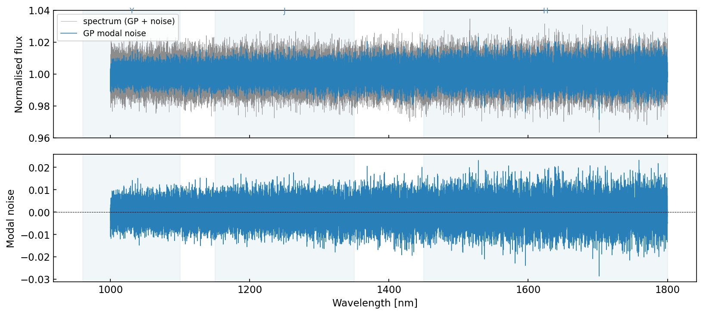
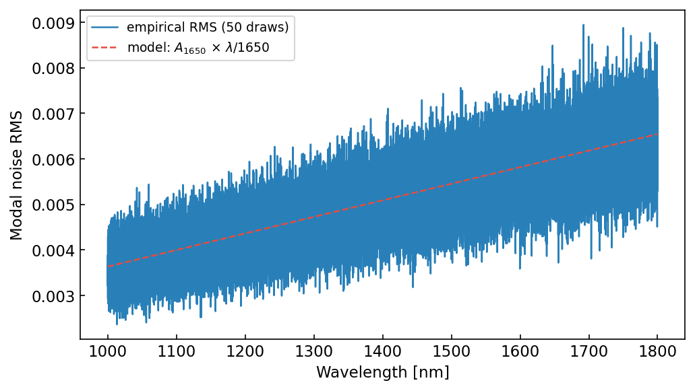
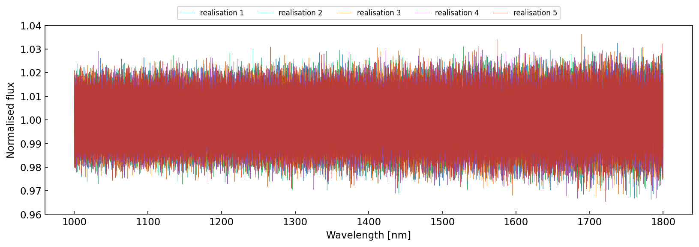

What is modal noise?
Qu'est-ce que le bruit de mode?
Optical fibres used in high-resolution spectrographs support a finite number of propagation modes. The interference pattern between these modes creates a wavelength-correlated "speckle" structure superimposed on the stellar spectrum — known as modal noise. Unlike photon or read noise, modal noise is spectrally correlated: nearby wavelengths carry similar errors.
Les fibres optiques utilisées dans les spectrographes à haute résolution supportent un nombre fini de modes de propagation. L'interférence entre ces modes crée une structure de type « speckle » corrélée en longueur d'onde, superposée au spectre stellaire — c'est le bruit de mode. Contrairement au bruit de photons ou de lecture, le bruit de mode est spectralement corrélé : les longueurs d'onde voisines partagent des erreurs similaires.
The amplitude of modal noise grows with wavelength because the number of modes scales as (D/λ)²: at longer wavelengths fewer modes propagate, increasing the speckle contrast.
L'amplitude du bruit de mode croît avec la longueur d'onde car le nombre de modes évolue en (D/λ)² : aux grandes longueurs d'onde, moins de modes se propagent, ce qui augmente le contraste des speckles.

One simulated spectrum (grey) with the underlying GP modal-noise signal (blue). Bottom panel: the modal-noise component alone, showing increasing amplitude toward the red.
Un spectre simulé (gris) avec le signal de bruit de mode GP sous-jacent (bleu). Panneau du bas : la composante de bruit de mode seule, montrant une amplitude croissante vers le rouge.
The model
Le modèle
The simulator draws a single realisation of a Gaussian Process with a squared-exponential (RBF) kernel on a uniform log-λ (constant velocity) grid, then applies a wavelength-dependent amplitude envelope and adds independent white noise:
Le simulateur tire une réalisation unique d'un processus gaussien avec un noyau exponentiel carré (RBF) sur une grille log-λ uniforme (vitesse constante), puis applique une enveloppe d'amplitude dépendante de la longueur d'onde et ajoute un bruit blanc indépendant :
S(λ) = 1 + GP(0, K) × A1650 × (λ/1650) + 𝒩(0, σn²)
The GP kernel width (correlation length) controls how rapidly the modal noise varies in velocity space. A typical fibre-fed spectrograph shows correlation lengths of a few to tens of km/s.
La largeur du noyau GP (longueur de corrélation) contrôle la rapidité de variation du bruit de mode dans l'espace des vitesses. Un spectrographe à fibre typique présente des longueurs de corrélation de quelques dizaines de km/s.

Empirical RMS of the modal noise over 50 realisations (blue) vs. the analytical amplitude model A₁₆₅₀ × λ/1650 (red dashed).
RMS empirique du bruit de mode sur 50 réalisations (bleu) comparé au modèle analytique A₁₆₅₀ × λ/1650 (rouge pointillé).

Five independent realisations drawn with the same kernel parameters. Each represents a distinct modal-noise pattern as would be observed between different fibre agitation states.
Cinq réalisations indépendantes tirées avec les mêmes paramètres de noyau. Chacune représente un patron de bruit de mode distinct, tel qu'observé entre différents états d'agitation de la fibre.
Installation
Installation
Clone the repository
Cloner le dépôt
git clone https://github.com/eartigau/modal-simu.git cd modal-simu
Install dependencies (standard scientific Python stack)
Installer les dépendances (pile Python scientifique standard)
pip install numpy scipy matplotlib pyyaml
Run the demo
Lancer la démo
python demo.py
Usage
Utilisation
Command line
Ligne de commande
# use default config, show plot# config par défaut, afficher le graphe python generate_modal_noise.py --plot # custom config, save to CSV# config personnalisée, sauvegarder en CSV python generate_modal_noise.py my_config.yaml --outfile spectrum.csv --seed 42
As a Python module
En tant que module Python
from generate_modal_noise import generate_spectrum # default parameters# paramètres par défaut wave, spectrum, gp_signal = generate_spectrum() # from YAML config# depuis un fichier YAML wave, spectrum, gp_signal = generate_spectrum(yaml_file='my_config.yaml', seed=42) # custom wavelength grid + parameter override# grille de longueurs d'onde personnalisée + paramètre modifié import numpy as np wave_nm = np.linspace(1450, 1800, 2000) wave, spectrum, gp_signal = generate_spectrum( wave_grid=wave_nm, params={'kernel_width_kms': 10, 'amplitude_at_1650nm': 0.01} )
Parameters
Paramètres
| YAML key | Clé YAML | Default | Défaut | Description | Description |
|---|---|---|---|---|---|
| wavelength_start_nm | 1000 | Start of wavelength range [nm] | Début de la plage spectrale [nm] | ||
| wavelength_end_nm | 1800 | End of wavelength range [nm] | Fin de la plage spectrale [nm] | ||
| velocity_step_kms | 1.0 | Pixel spacing in velocity [km/s] | Pas en vitesse par pixel [km/s] | ||
| kernel_width_kms | 3.5 | GP correlation length [km/s] — controls speckle scale | Longueur de corrélation GP [km/s] — contrôle l'échelle des speckles | ||
| amplitude_at_1650nm | 0.006 | GP RMS amplitude at 1650 nm (fractional flux) | Amplitude RMS du GP à 1650 nm (flux fractionnaire) | ||
| white_noise | 0.005 | White-noise std per pixel (fractional flux) | Écart-type du bruit blanc par pixel (flux fractionnaire) |
Default config file
Fichier de configuration par défaut
# default_config.yaml wavelength_start_nm: 1000.0 # start of wavelength range [nm]# début de la plage spectrale [nm] wavelength_end_nm: 1800.0 # end of wavelength range [nm]# fin de la plage spectrale [nm] velocity_step_kms: 1.0 # pixel spacing in velocity [km/s]# pas en vitesse par pixel [km/s] kernel_width_kms: 3.5 # GP correlation length [km/s]# longueur de corrélation GP [km/s] amplitude_at_1650nm: 0.006 # GP amplitude at 1650 nm# amplitude GP à 1650 nm white_noise: 0.005 # per-pixel white noise std# bruit blanc par pixel